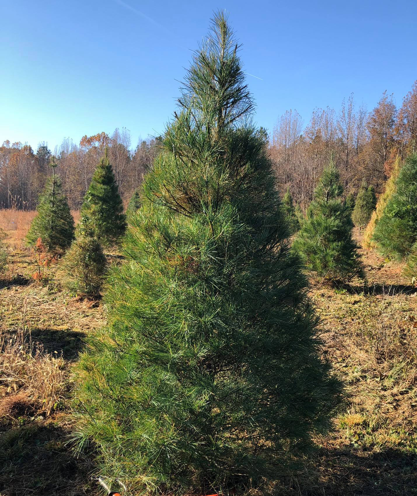
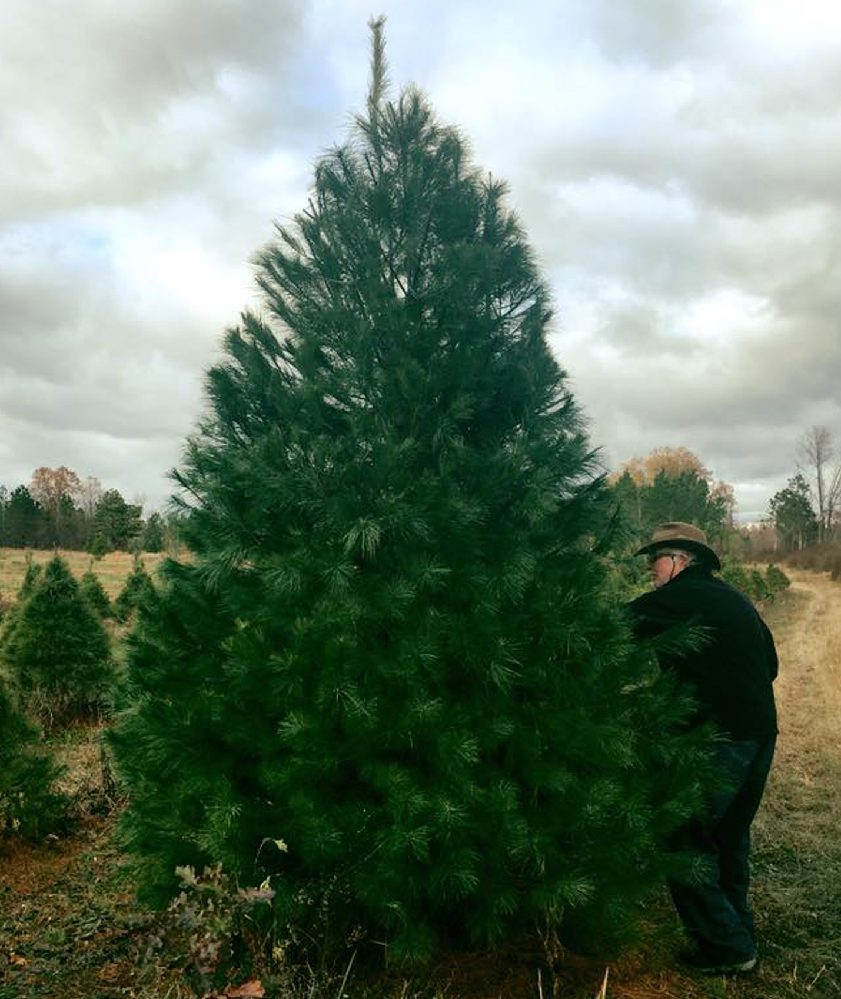
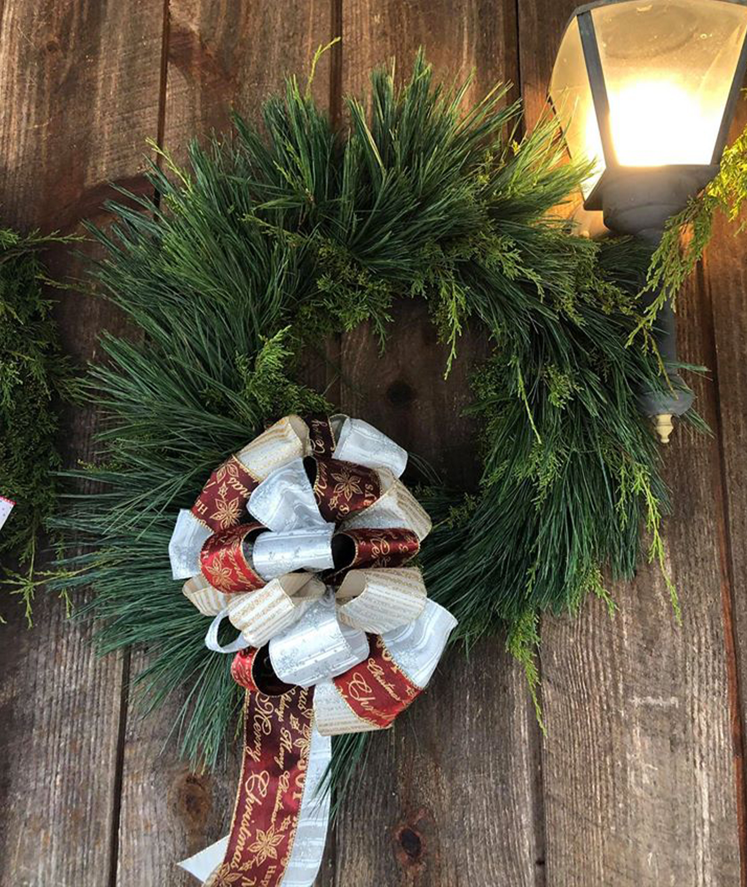

Hours of opperation
The 2020 season begins Friday, November 28th, and lasts until Friday, December 19th!
- Sunday: 12:00 P.M. - Dark
- Monday - Wednesday: By Appointment
- Thursday - Saturday: 9:00 A.M. - Dark
Please call for more information about our delivery service.
Pricing
Once you pick the perfect tree, we will cut it down and shake out the needles for easy handling!
 Virginia Pines: $6.00/foot - A poplular choose-and-cut Christmas tree, Virginia Pines have soft needles that provide a pleasant pine fragrance.
 White Pines: $6.50/foot - Grown in the U.S. for many years, the Eastern White Pine has soft, flexible needles that won't fall off.
 Homemade Wreaths: $25.00 - These homemade wreaths are beautifully crafted. They may be reserved by calling ahead.
- All trees 10 feet and taller are priced at $7.50/foot.
Tree Pricing Tool
Use the buttons below to change how big the tree is, and see the prices accordingly.
Tree Size: 5 Feet
- Virginia Pine - $30.00 |
- White Pine - $32.50
Tree Care
Fresh trees are not a fire hazard when properly displayed and watered. Keeping the tree in water is the most important part of Christmas tree care. Christmas trees should be placed in cool areas away from drafts and potential sources of warm air. Trees should not be placed near fireplaces, heaters, furnace vents or television sets. Light cords and connections used on the tree or in other holiday decorations should always be unplugged when leaving home or going to bed.
Before mounting the tree in the tree stand, rinse the stand's water container with one capful of bleach and one cupful of water. This treatment will reduce the growth of mold that can block the tree's ability to absorb water. Cut one-half inch from the base of the tree and place in the stand with water as soon as possible. Add water daily and do not let the water level drop to the level of the cut end of the trunk.
Learn More About Tree Care
History
Ward Grove Christmas Tree Farm has been in our family since the 1830's. For many years the crops were cotton, soybeans, corn, truck farming and livestock. When Roy and Sue relocated to Jackson in 1986 the first Christmas trees were planted. With the addition of our rustic cabin and mule-driven wagon rides in 1993, families began looking to our farm as an important Christmas tradition.
Many of our first customers have begun to bring their grandchildren to share in the experience of finding the perfect Christmas tree. Our farm is still a family operation with Roy, Sue, Ricky, Emily, her husband Robbie, and Jesse still working on the farm. The next generation of Sam, Christie, Kevin, and Marian are waiting in the wings to join us.